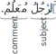
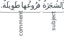
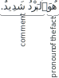

Not ready for study.
28 إِنَّ and its sisters
28.1 Introduction
In the basic nounal sentence, both the subject and the info are in the u-state. For example:
“This man is a teacher.”
In the above sentence both the subject ٱَلرَّجُلَ “the man”, and the info مُعَلِّمٌ “a teacher” are in the u-state. In this chapter we will study a family of particles, called إِنَّ and its sisters, that modify the nounal sentence by placing the subject in the a-state instead of the u-state. For example,
إِنَّ ٱلرَّجُلَ مُعَلِّمٌ.
ʾinna -rrajula muɛallimun.
“Indeed the man is a teacher.”
Note how, in the above example, the subject ٱَلرَّجُلَ “the man” is now in the a-state. The info مُعَلِّمٌ “a teacher” remains in the u-state.
The particles constituting the family of إِنَّ and its sisters are:
- إِنَّ ʾinna
- أَنَّ ʾanna
- كَأَنَّ kaʾanna
- لَـٰكِنَّ lākinna
- لَيْتَ layta
- لَعَلَّ laɛalla
We shall now study each of these particles.
28.2 إِنَّ ʾinna
إِنَّ ʾinna is used to begin independent sentences. It has an emphatic meaning, as if the speaker is asserting the info about the subject. It is often translated into English as “indeed” or “verily”, but it is also often left untranslated.
إِنَّ ʾinna is only used to begin nounal sentences. Verbal sentences cannot be introduced by إِنَّ ʾinna directly. (Later, in section @ref(damiir-al-shan), we shall see how to overcome this restriction.). For example,
إِنَّ ٱلدِّينَ عِنْدَ ٱللَّـٰهِ ٱلْإِسْلَامُ.
ʾinna -ddīna ɛinda -llāhi -lʾislāmu.
“Indeed, the religion in the sight of Allāh is Islām.” (Qurʾān 3:19, trans. Saheeh International)
إِنَّ ʾinna may be preceded by other particles like وَ “and”, فَ “so”, and ثُمَّ “then”. For example,
ٱُطْلُبِ ٱلْعِلْمَ ٱلنَّافِعَ. فَإِنَّ طَلَبَ ٱلْعِلْمَ ٱلنَّافِعَ عَمَلٌ صَالِحٌ. وَإِنَّ تَرْكَهُ غَفْلَةٌ. “Seek the useful knowledge. For indeed the seeking of the useful knowledge is a good deed. And indeed leaving it is a negligence.”
The subject of إِنَّ ʾinna may be a noun phrase, in which case, any attributes or replacements of the subject are also in the a-state. Examples:
إِنَّ هَـٰؤُلَاءِ ٱلرِّجَالَ ٱلْكِرَامَ أَصْدِقَائِي.
“Indeed these noble men are my friends.”
إِنَّ ʾinna may have multiple subjects, each in the a-state, separated by وَ. Example,
إِنَّ ٱلْمُسْلِمِينَ وَٱلْمُسْلِمَاتِ يَعْبُدُونَ ٱللَّـٰهَ.
“Indeed the Muslim men and Muslim women worship Allāh.”
If the info of the first subject has been mentioned before the second subject, then the second subject may optionally be in the a-state or the u-state. For example:
إِنَّ زَيْدًا جَالِسٌ وَعَمْرًا.
or
إِنَّ زَيْدًا جَالِسٌ وَعَمْرٌو.
“Indeed Zayd is sitting and Ɛamr [as well].”
إِنَّ هَـٰذَا ٱلْكِتَابَ لِي وَذَ ٰلِكَ ٱلْكِتَابَ لَكَ.
or
إِنَّ هَـٰذَا ٱلْكِتَابَ لِي وَذَ ٰلِكَ ٱلْكِتَاكُ لَكَ.
“Indeed this book is for me and that book is for you.”
إِنَّ ʾinna may be used to begin sentences with an indefinite subject. For example,
إِنَّ مَلِكًا مِنَ ٱلْهِنْدِ كَتَبَ إِلَىٰ أَحَدِ وُزَرَائِهِ.
“Indeed a king from India wrote to one of his ministers.”
Note that in all the above examples that إِنَّ ʾinna is only used to begin nounal sentences. Verbal sentences cannot be introduced by إِنَّ ʾinna directly. (Later, in section @ref(damiir-al-shan), we shall see how to overcome this restriction.). By default, the subject of إِنَّ ʾinna must directly follow it with no intervening words or particles. The only exception is when the info consists of a prepositional or adverbial phrase, it is then allowed to precede the subject. The subject, in any case, shall be in the a-state. For example,
إِنَّ فِي ٱلْبَيْتِ رَجُلًا.
“Indeed, in the house, is a man.”
إِنَّ تَحْتَ ٱلشَّجَرَةِ كَنْزًا ثَمِينًا.
“Indeed, under the tree, is a precious treasure.”
This reverse order is permitted even when the subject is definite. For example,
إِنَّ مَعَكَ صَاحِبَكَ.
“Indeed, with you, is your companion.”
This puts the logical accent on the subject صَاحِبَكَ “your companion”. If the subject is placed first then this puts the logical accent on the info:
إِنَّ صَاحِبَكَ مَعَكَ.
“Indeed your companion is with you.”
If the subject contains a pronoun that refers to a noun in the info then the info must precede the subject. For example,
إِنَّ فِي ٱلْمَصْنَعِ عُمَّالَهُ.
“Indeed, in the factory, are its workers.”
إِنَّ أَمَامَ ٱلدَّارِ حَارِسَهَا.
“Indeed, in front of the door, is its guard.”
28.2.1 TODO:
إن زيدا آكل طعامك
See شرح ابن عقيل على الألفية 1/349
Tie in with separating 3aamil from ma3muul
28.2.2 Pronoun subjects
The subject of إِنَّ may be a pronoun instead of a noun. For this the attached pronouns are used. For example,
لَا تَقْطَعْ تِلْكَ ٱلشَّجَرَةَ فَإِنَّهَا ظَلِيلَةٌ.
“Don’t cut that tree, for it is shady.”
إِنَّكُمَا صَدِيقَايَ.
“You2 are my friends.”
The speaker pronouns, both singular and plural, may optionally keep or drop their ن. So for the singular speaker pronoun both إِنَّنِي ʾinnanī and إِنِّي ʾinnī may be used. And for the plural speaker pronoun both إِنَّنَا ʾinnanā and إِنَّا ʾinnā may be used. Examples:
إِنِّي مُسْلِمٌ.
or
إِنَّنِي مُسْلِمٌ.
“Indeed I am a Muslim.”
إِنَّنَا كَاتِبُو هَـٰذَا ٱلْكِتَابَ.
or
إِنَّا كَاتِبُو هَـٰذَا ٱلْكِتَابَ.
“Indeed we are the writers of this book.”
TODO: Multiple pronoun subjects: إِنِّ وَ إِيَّاكَ …
إِنَّ with the speaker pronouns are often used with doer participles to signify that the speaker intends to to the action of the verb. For example,
إِنِّي ذَاهِبٌ إِلَىٰ ٱلْمَسْجِدِ.
“I’m going to the mosque.”
We also mentioned this point in section @ref(doer participle-for-intended-future-action).
28.2.3 إِنَّ ʾinna with a strengthening لَ
The strengthening particle لَ adds extra emphasis and may optionally be used between the subject of إِنَّ and its info. If the subject occurs first (as is the default) then لَ is connected to and placed directly before the info. For example:
إِنَّ زَيْدًا لَقَائِمٌ.
“Indeed Zayd is definitely standing.”
If the info precedes the subject, then then لَ is connected to and placed directly before the subject. For example:
إِنَّ فِي ٱلْبَيْتِ لَرَجُلًا.
“Indeed, in the house, is definitely a man.”
The strengthening particle لَ is only used with إِنَّ and not for any of its other sisters (إِنَّ, أَنَّ, كَأَنَّ, لَـٰكِنَّ, لَيْتَ, and لَعَلَّ).
28.2.4 Commonality of rules for إِنَّ and its sisters
Unless otherwise noted, the rules we have presented above for إِنَّ, for example, the subject being in the a-state, the order of the subject and the info, the use of attached pronouns for the subject, etc., apply also to its other sisters.
The strengthening particle لَ, as mentioned above, is only used with إِنَّ and not for any of its other sisters.
28.3 أَنَّ ʾanna
The particle أَنَّ ʾanna can be translated as “that”. It is similar to إِنَّ in that it is asserts the info about the subject. But أَنَّ is different from إِنَّ in that إِنَّ, its subject, and its info together constitute a complete sentence. Whereas the أَنَّ clause (أَنَّ , its subject, and its info together) does not constitute a complete sentence. For example, consider the expression:
زَيْدٌ صَادِقٌ.
“Zayd is truthful.”
This is a complete sentence. But if we add أَنَّ “that” to its beginning, it no longer remains a complete sentence:
أَنَّ زَيْدًا صَادِقٌ
“that Zayd is truthful”
We need to additional words, external to the أَنَّ clause to complete the sentence. We will see examples of this below.
28.3.1 The أَنَّ clause in place of the direct doee
“I know that Zayd is truthful.”
Note how, in the example above the أَنَّ clause (أَنَّ زَيْدًا صَادِقٌ) has occupied the place of the direct doee of the verb أَعْلَمُ.
In a similar manner, أَنَّ clauses can be placed where one would expect other noun positions, such as: a subject, an info, a doer, and more. Here are some examples:
28.3.2 The أَنَّ clause in place of the doer
Example:
“That you are sick has reached me.” (“It has reached me that you are sick.”)
28.3.3 The أَنَّ clause in place of the subject
Example (with info before subject in sentence word order):
“From his characteristeics is that he is noble.”
28.3.4 The أَنَّ clause in place of the info
Example:
“The truth is that he went.”
28.3.5 أَنَّ with كَانَ
As you know, كَانَ’s doer is also its subject, and its direct doee is also its info. The أَنَّ clause can occur in either the subject or the info of كَنَ. For example, the أَنَّ clause as the info:
“The matter was that he didn’t do his obligation.”
Now, the أَنَّ clause as the subject:
“That he didn’t do his obligation was the matter.”
Note that in the latter case, the info precedes the subject.
28.3.6 The أَنَّ clause in place of an i-state noun
The أَنَّ clause can occur in place of an i-state base noun in an annexation. Example:
“The highway robbers (literally: the cutters of the way) have increased to the degree that the journey is dangerous.”
The أَنَّ clause can occur in place of an i-state noun directly following a preposition. Example:
“I wondered at that Zayd is asleep.”
28.3.6.1 Optionally deleting the preposition directlt before an أَنَّ clause
If an أَنَّ clause directly follows a preposition, it is permissible to optionally delete the preposition as long as the meaning remains clear. So the previous example can be expressed without the preposition مِنْ with the same meaning:
عَجِبْتُ أَنَّ زَيْدًا نَائِمٌ.
“I wondered at that Zayd is asleep.”
28.3.6.2 لِأَنَّ “because”
The combination of the preposition لِ “for” and أَنَّ is used to mean “because”. For example,
أَكَلْتُ ٱلطَّعَامَ لِأَنَّنِي كُنْتُ جَائِعًا.
“I ate the food because I was hungry.”
28.3.7 Equivalence of the أَنَّ clause with a maṣdar
As a matter of grammatical theory, the أَنَّ clause, i.e. (أَنَّ itself, its subject, and its info) is considered equivalent to a maṣdar (typically in an annexation, and possibly with a direct doee as well). It is this equivalence that allows it to thake the place of a doer, direct doee, and the other categories we have given above. For instance, consider the example:
عَجِبْتُ مِنْ أَنَّ زَيْدًا ذَهَب.
“I wondered at that Zayd went.”
Here, the clause أَنَّ زَيْدًا ذَهَب is equivalent to the verbal noun phrase ذَهَابِ زَيْدٍ “Zayd’s going”. So the grammatically equivalent sentence with this verbal noun phrase is:
عَجِبْتُ مِنْ ذَهَابِ زَيْدٍ.
“I wondered at Zayd’s going.”
Similarly, in the example,
مِنْ صِفَاتِهِ أَنَّهُ كَرِيمٌ.
“From his characteristics is that he is generous.”
the clause أَنَّهُ كَرِيمٌ is equivalent to the verbal noun phrase كَرَامَتِهِ “his generosity”. So the grammatically equivalent sentence with this verbal noun phrase is:
كَرَامَتِهِ مِنْ صِفَاتِهِ.
“His generosity is from his characteristics.”
This grammatical equivalence is more a matter of theory than of practical usefulness to us. And you have seen this grammatical equivalence before with أَنْ and a-state stateful verbs in chanpter @ref(a-state-stateful-verbs-verbal-noun).
28.4 كَأَنَّ kaʾanna
كَأَنَّ kaʾanna may be translated as “[It is] as if”. It is actually simply the preposition كَ “like” attached to أَنَّ. But it is treated separately because, unlike أَنَّ, كَأَنَّ kaʾanna, its subject, and its info constitute a complete sentence. For example,
كَأَنَّ ٱلْأُمُّ مَدْرَسَةٌ.
“[It is] as if the mother is a school.”
TODO: add more info
28.5 لَـٰكِنَّ lākinna
TODO
28.6 لَيْتَ layta
TODO
28.7 لَعَلَّ laɛalla
TODO
28.8 The state-of-affairs pronoun with إِنَّ and its sisters
The state-of-affairs pronoun (see section (ref)) is used very commonly with إِنَّ and its sisters. For example:
- يَـٰمُوسَىٰٓ إِنَّهُۥٓ أَنَا ٱللَّهُ ٱلْعَزِيزُ ٱلْحَكِيمُ [سورة النمل 27:9 cited by النحو العربي: أحكام ومعان 1/89]
O Moses, indeed it is I - Allāh, the Exalted in Might, the Wise.
The state-of-affairs pronoun also functions as a device to enable a verbal sentence to directly follow إِنَّ (or one of its sisters) without having to specify a subject for إِنَّ.1 Examples:
إِنَّهُۥ لَا یُفۡلِحُ ٱلظَّـٰلِمُونَ [سورة الأنعام 6:21 cited by النحو العربي: أحكام ومعان 1/89]
Indeed, the wrongdoers will not succeed.فَإِنَّهَا لَا تَعۡمَى ٱلۡأَبۡصَـٰرُ وَلَـٰكِن تَعۡمَى ٱلۡقُلُوبُ ٱلَّتِی فِی ٱلصُّدُورِ [سورة الحج 22:46 cited by النحو العربي: أحكام ومعان 1/89]
For indeed, it is not eyes that are blinded, but blinded are the hearts which are within the breasts.
28.9 The info as a complete sentence and the pronoun of the fact
28.9.1 The info as a complete sentence
There is a sub-type of nounal sentence where the info is a complete sentence. Here is an example:
“The tree: its branches are long.”
In these kinds of sentences, the subject introduces a topic, and the info is itself a sentence which comments on the topic/subject. We have, in fact, already seen sentences like this in section @ref(past-verbs-order-of-words), when we take a verbal sentence and convert it to a nounal sentence. This is the example we discussed there:
ٱَلرَّجُلُ كَتَبَ كِتَابًا.
“The man: he wrote a book.”
28.9.1.1 The linker pronoun
A nounal sentence, in which the info is itself a sentence; typically requires a pronoun in the info that links back to the subject. In the example ٱَلشَّجَرَةُفُرُوعُهَا طَوِيلَةٌ., the attached pronoun هَا “it” in فُرُوعُهَا “its tree” is the linker pronoun that links back to the subject ٱَلشَّجَرَةُ “the tree”.
Similarly, in the example ٱَلرَّجُلُ كَتَبَ كِتَابًا. the linker pronoun is the invisible doer pronoun “he” of the verb كَتَبَ “he wrote” that links back to the subject ٱَلرَّجُلُ “the man”.
28.9.1.2 Nounal sentences with إِنَّ and its sisters
إِنَّ and its sisters are very often used in nounal sentences. (With أَنَّ it is, as usual, an incomplete sentence.) Here are some examples:
إِنَّ زَيْدًا لَهُ أَخٌ وَأُخْتٌ.
“Indeed Zayd: he has a brother and sister.”
ٱِعْلَمْ أَنَّ ٱلْعِلْمَ حُصُولُهُ يَتَطَلَّبُ جُهْدًا.
“Know that knowledge: its obtaining requires effort.”
28.9.1.3 Nounal sentences with a pronoun subject
The subject, in a nounal sentence, is frequently a pronoun. For example,
أَنَا ٱسْمِي زَيْدٌ.
“I: my name is Zayd.”
أَكَلْتُ ٱلطَّعَامَ لَـٰكِنَّكَ لَمْ تَأْكُلْ.
“I ate the food but you: you didn’t eat.”
28.9.2 The pronoun of the fact
Mostly, pronouns are used in place of nouns when it is already known to whom the noun refers to. So if you say:
أَنَا ٱسْمِي زَيْدٌ.
“I: my name is Zayd.”
the pronoun أَنَا “I” refers to the speaker, who is known.
There is a special pronoun, called the pronoun of the fact that begins nounal sentences. This pronoun does not refer to any previously known entity, but rather refers to the info that follows it. It is sometimes translated as “the fact is” but is often left untranslated. Here is an example:
“The fact is: the cold is intense.”
This pronoun is usually the singular masculine pronoun (as above) but it is also sometimes the singular feminine pronoun هِيَ. It is typically used with statements of import, to which the speaker wishes to draw attention. The info does not contain a linker pronoun because the whole info refers back to the subject. The pronoun of the fact is frequently used with إِنَّ and its sisters. Here are some examples:
إِنَّهُ لَا يُفْلِحُ ٱلْكَافِرُونَ.
“Indeed, the disbelievers will not succeed.”
(Qurʾān 23:117, trans. Saheeh International)
Sometimes, one can choose between using the pronoun of the fact and a pronoun matching the participant resulting in different emphasis. For example,
إِنِّهُ هُمُ ٱلْفَاعِلُونَ
“Indeed, the fact is: they are the doers.”
إِنِّهُمْ هُمُ ٱلْفَاعِلُونَ
“Indeed, they are the doers.”
28.10 The lightened versions إِنْ, أَنْ, كَأَنْ, and لَـٰكِنْ
The particles إِنَّ, أَنَّ, كَأَنَّ, and لَـٰكِنَّ, because of the doubled نّ are considered heavy. There exist lightened versions of these particles that are: إِنْ, أَنْ, كَأَنْ, and لَـٰكِنْ. These lightened versions have similar meanings to their heavy counterparts but they have somewhat different rules. We will discuss them below. In terms of their usage إِنْ and كَأَنْ are not very commonly used except in the Qurʾān, poetry, and other rhetorical texts. أَنْ and لَـٰكِنْ are relatively more common.
28.10.1 The lightened إِنْ
The lightened إِنْ can be used in either of the following ways:
With the same rules as the heavy إِنَّ. The subject is put in the a-state and the use of the strengthening لَ is optional. For example,
إِنْ زَيْدًا مُسْلِمٌ.
or
إِنْ زَيْدًا لَمُسْلِمٌ.
“Indeed Zayd is a Muslim.”However, this method is not as common as the second way (below):
The subject is not put in the a-state but is rather in the u-state. However, the strengthening لَ (see section @ref(inna-strengthening-la) above), that was optional with the heavy إِنَّ, is now mandatory with the lightened إِنْ. For example,
إِنْ زَيْدٌ لَمُسْلِمٌ.
“Indeed Zayd is a Muslim.”
Another notable difference between the lightened إِنْ and the heavy إِنَّ is that the heavy إِنَّ is only used to introduce nounal sentences. The lightened إِنْ, however, can be used to introduce verbal sentences, but only those that begin with the verbs: كَانَ and its sisters, كَادَ and its sisters, and ظَنَّ and its sisters. For example,
قَرَأْتُ ٱلْكِتَابَ وَإِنْ كَانَ ٱلْكِتَابُ لَجَيِّدًا.
“I read the book and indeed the book was good.”
28.10.2 The lightened أَنْ
As we know, the heavy أَنَّ is an emphatic particle and is frequently used with the pronoun of the fact, thus:
أَعْلَمُ أَنَّهُ ٱلْبَرْدُ شَدِيدٌ.
“I know that the fact is: the cold is intense.”
When we wish not to use much emphasis, we may replace the heavy أَنَّ along with its following pronoun of the fact (أَنَّهُ/أَنَّهَا) with a lightened أَنْ, thus:
أَعْلَمُ أَنِ ٱلْبَرْدُ شَدِيدٌ.
“I know that the cold is intense.”
Note that the lightened أَنْ replaces أَنَّهُ, which is the combination of heavy أَنَّ and the pronoun of the fact هُ. So the pronoun of the fact (هُ) does not appear with the lightened أَنْ.
In the above example, the lightened أَنْ introduces a info which is a nounal sentence. But the more common use of the lightened أَنْ is to introduce infos that are verbal sentences.
When the info of the lightened أَنْ is a verbal sentence, then it is preferred to separate the verb from أَنْ with one of the following:
قَدْ. Example:
أَظُنُّ أَنْ قَدْ غَرَبَتِ ٱلشَّمْسُ.
“I think that the sun has set.”سَ or سَوْفَ. Example:
أَعْلَمُ أَنْ سَيَذْهَبُ.
“I know that he will go.”A negative particle like لَا, لَنْ, or لَمْ.
أَعْلَمُ أَنْ لَا يَذْهَبُ.
“I know that he does/will not go.”Note that, in writing, we have not combined the lightened أَنْ and لَا to form أَلَّا, as is done for the a-state-verbal أَنْ (for example: أَلَّا يَذْهَبَ “that he not go”) in chapter @ref(chapter-a-state-stateful-verbs). This distinction in spelling is not obligatory, but some authorities recommend it. In any case, they are both pronounced the same: ʾallā.
More examples:
أَعْلَمُ أَنْ لَنْ يَذْهَبَ.
“I know that he shall not go.”أَعْلَمُ أَنْ لَمْ يَذْهَبْ.
“I know that he did not go.”Note that the لَنْ and لَمْ, even when after the lightened أَنْ, change the state of the following stateful verb to the a-state and 0-state respectively.
The conditional particle لَوْ. We will study conditional sentences in chapter @ref(conditional-sentences). TODO: add example.
Rigid verbs like لَيْسَ and verbs expressing supplications are exempted from needing to be separated from the lightened أَنْ. Example:
ظَنَنْتُ أَنْ لَيْسَ ٱلْبَرْدُ شَدِيدًا.
“I thought that the cold is not intense.”
28.10.2.1 Distinguishing between the lightened أَنْ and the a-state-verbal أَنْ
See دليل السالك إلى ألفية ابن مالك vol 3 p 4
Although they are similar in meaning, care must be taken to distinguish between this lightened أَنْ and the a-state-verbal أَنْ (that we learned in chapter @ref(chapter-a-state-stateful-verbs)), The a-state-verbal أَنْ puts the following stateful verb in the a-state. Whereas the stateful verb directly after the lightened أَنْ remains in the u-state. The following guidelines can help to distinguish between these two أَنْs:
If the verb before أَنْ signifies certainty then only أَنَّ and its lightened version أَنْ is used. For example,
أَعْلَمُ أَنْ قَدْ ذَهَبَ وَأَنْ سَيَرْجِعُ.
“I know that he has gone and that he will return.”If the verb before أَنْ signifies wanting, hoping, or expecting, then the أَنْ puts the following verb in the a-state. For example,
أَطْمَعُ أَلَّا يَذْهَبَ.
“I hope that he not go.”Note that the verb يَذْهَبَ is in the a-state.
If the verb before أَنْ reflects a view of something going to occur, and signifies neither certainty nor expectation, but rather doubt or neutrality, then either of the أَنْs may be used, depending on the intended meaning. Such verbs include ظَنَّ يَظُنُّ “to think” and حَسِبَ يَحْسِبُ “to deem”. For example,
a-state-verbal أَنْ:
ظَنَنْتُ أَنْ يَرْجِعَ.
“I thought that he should return.”lightened أَنْ:
ظَنَنْتُ أَنْ يَرْجِعُ.
“I thought that he will return.”If the verb before أَنْ does not reflect a view of something going to occur then the أَنْ is typically the a-state-verbal أَنْ. For example,
سَرَّنِي أَنْ تَنْجَحَ
“That you succeed [will have] gladdened me.”Remember from chapter @ref(chapter-a-state-stateful-verbs)), that the a-state-verbal أَنْ can occur with perfect verbs as well. Example:
سَرَّنِي أَنْ نَجَحْتَ
“That you have succeeded [has] gladdened me.”
28.10.3 The lightened كَأَنْ
The lightened كَأَنْ is similar to the lightened أَنْ in that it introduces a nounal sentence and the subject is usually a deleted pronoun of the fact. For example,
كَأَنِ ٱلْبَرْدُ ذَهَبَ.
“[It is] as if the cold has gone.”
Also similar to the lightened أَنْ, the lightened كَأَنْ may introduce a verbal sentence but it must be separated from كَأَنْ by either قَدْ or لَمْ. For example,
ذَهَبَ كَأَنْ لَمْ يَسْمَعْ.
“He went as if he did not hear.”
28.10.4 The lightened لَـٰكِنْ
The lightened لَـٰكِنْ has the same meaning as the heavy لَـٰكِنَّ but it has no grammatical effect on the word or sentence after it. It may introduce either nounal sentences or verbal sentences. For example,
نَجَحَ زَيْدٌ لَـٰكِنْ صَدِيقُهُ لَمْ يَنْجَحْ.
“Zayd succeeded but his friend did not succeed.”
النحو العربي: أحكام ومعان 1/89↩︎